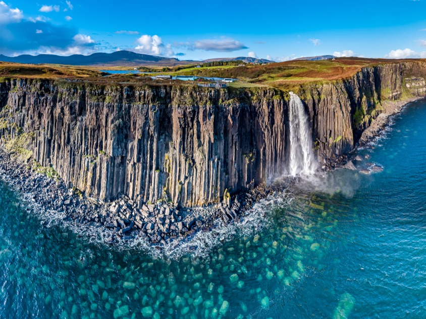
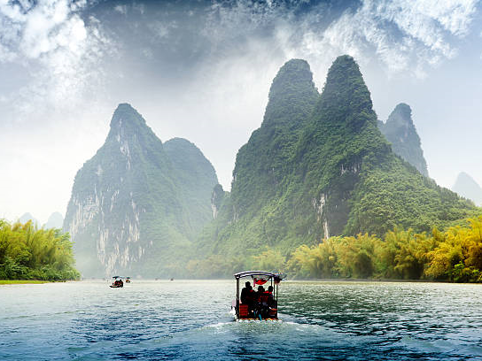
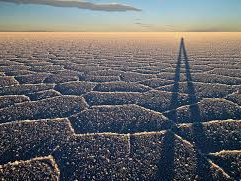
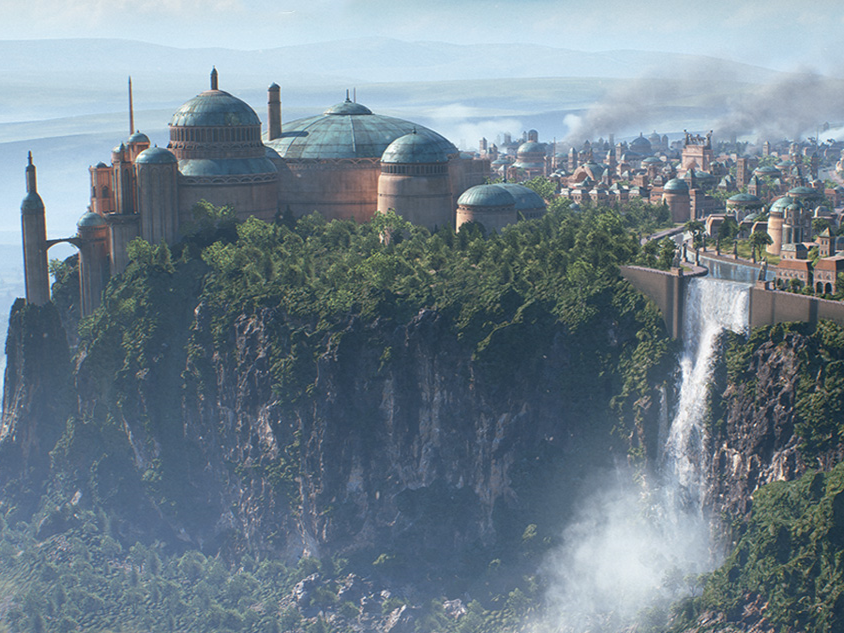
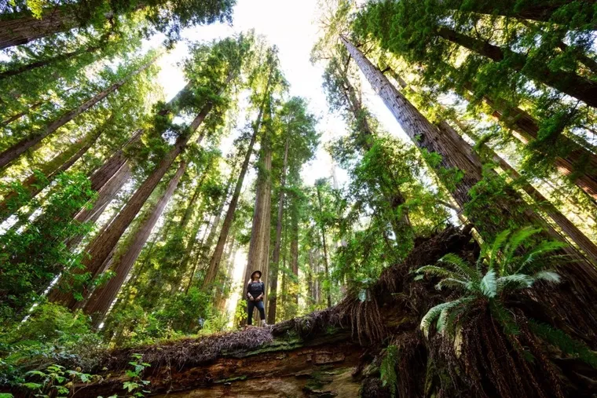
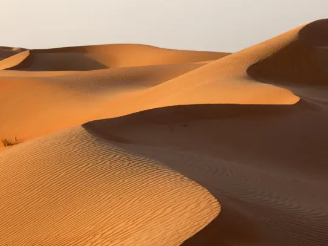

Fans de Star Wars et amateurs de paysages grandioses, embarquez pour une aventure intergalactique… sans quitter la Terre ! Des déserts brûlants de Tatooine aux forêts enchantées d’Endor, en passant par les palais majestueux de Naboo, découvrez les lieux réels qui ont donné vie aux mondes les plus iconiques de la saga. Préparez-vous à une immersion totale dans ces destinations extraordinaires, où chaque paysage vous rappellera une scène culte. Que vous soyez un Jedi en quête d’exploration ou un simple voyageur curieux, ces lieux vous transporteront au cœur de l’univers Star Wars.
-

Tataouine (Tunisie)
Plongez dans l’ambiance mythique de Tatooine en explorant les dunes infinies du désert du Sahara. À Matmata, découvrez les habitations troglodytes qui ont servi de maison à Luke Skywalker, tandis qu’à Tozeur, vous pourrez admirer les vastes plaines de sel de Chott el Jerid, là où la ferme des Lars a été construite. Une expérience hors du temps sous le soleil brûlant du Maghreb ! -

Skye (Irlande)
Perchée au large des côtes irlandaises, Skellig Michael est un joyau de la nature et du patrimoine. C’est ici que Luke Skywalker s’est exilé dans la nouvelle trilogie. L’île est connue pour ses monastères anciens et ses falaises abruptes offrant une vue spectaculaire sur l’Atlantique. -

Guilin (Chine)
Les paysages verdoyants et montagneux de Kashyyyk, la planète des Wookiees, sont inspirés par les sublimes formations karstiques de Guilin en Chine. Ces montagnes émergeant des rivières ont un charme féerique, parfait pour une immersion totale dans un décor digne de La Revanche des Sith. -

Guilin (Chine)
Bienvenue sur la lune forestière d’Endor ! Rendez-vous dans le Redwood National Park, où les séquoias géants offrent un décor majestueux aux péripéties des Ewoks. Ce parc national est une destination parfaite pour les amoureux de la nature et des randonnées inoubliables sous ces arbres millénaires. -

Crait (Bolivie)
Direction le Salar de Uyuni, le plus grand désert de sel au monde ! Ce paysage unique, où le ciel et la terre se confondent lors de la saison des pluies, a servi d’inspiration pour la planète Crait (Les Derniers Jedi). Un décor surnaturel pour une expérience hors du commun. -

Naboo (Italie)
Plongez dans l’élégance de Naboo en visitant le Palais Royal de Caserte, un chef-d’œuvre baroque qui a servi de décor au palais de la reine Amidala. Puis, direction le lac de Côme, où vous pourrez revivre la romance entre Anakin et Padmé dans un cadre paradisiaque. -

Phang Nga (Thaïlande)
La célèbre baie de Phang Nga, avec ses formations rocheuses calcaires spectaculaires, a servi d’inspiration pour la planète Kashyyyk (le monde des Wookiees) dans La Revanche des Sith. -

Krafiac (Island)
Les scènes enneigées de Starkiller Base dans Le Réveil de la Force ont été tournées en Islande, notamment près du volcan Krafla et des glaciers de Eyjafjallajökull. Ce pays offre des paysages extraterrestres avec ses champs de lave, geysers et cascades majestueuses. -

Abu Dhabi (Émirats Arabes Unis)
Si vous rêvez d'explorer Jakku, la planète désertique de Rey, direction Abu Dhabi, où les dunes infinies du désert de Rub al-Khali ont servi de décor au film Le Réveil de la Force. Cet endroit magique est parfait pour une aventure saharienne inoubliable.